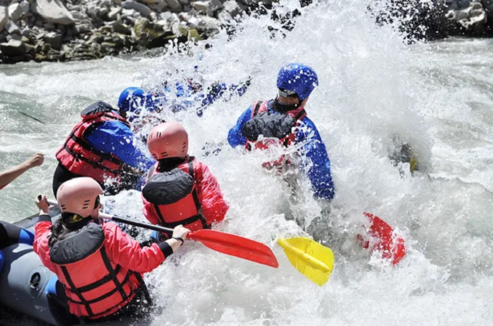

Rafting in Rivers of Ecuador
Get ready for the adventure of a lifetime with rafting in Ecuador's rivers! Navigate through turbulent waters and feel the rush of adrenaline as you tackle thrilling rapids. With breathtaking landscapes and unique biodiversity, each descent is a story you'll tell for years to come.